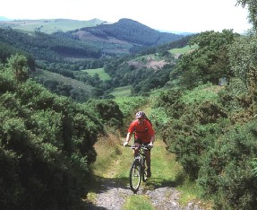

Llanwrtyd Wells, in Mid-Wales near Llandovery, is a great base for some good mountain biking. There are hills a-plenty, and a huge variety of tracks, from very technical climbs and downhills to easy wide forest roads. In addition, you'll find plenty of scenery to keep you entertained, from pretty streams to hills and wide valleys.
Finding routes is no problem. First, there's the Llanwrtyd Wells Cycle Guide, which has 5 off-road and 3 on-road routes. These routes are printed on cards and slide into the plastic cover of the book. The cards have hand-drawn maps that are accurate enough that you can find the tracks on on OS map, but aren't accurate enough to help you get back on track if something goes wrong. The written directions are helpful. In addition there are quite a few markers (saying CTC, as the CTC helped sponsor the effort) on fence posts. In some places the farmers have taken them down so they can't be relied on. The book itself isn't very useful if you're an experienced cyclist, as it just tells you the general stuff you know already. Some of the route cards can be bought separately. This is the way to go if you can find them.
 Picture by Tom Hutton I did two of the Cycle Guide routes, Routes 4 (Irfon Forest) and 5 (Mynydd Trawsnant), as well of bits of many of the others. Route 4 was great. It had nice views and some very challenging tracks, along with some boring fire road, especially the boring fire road climb at the beginning. To eliminate the initial boring part, follow Route 2 (The Garn) until it meets up with Route 4. Route 5 had one some nice bits, notably the bridleway between described by the directions between 2 and 3 on the card, and the bridleway bit starting at 4 and ending at the Abergwesyn Road. However, the rest of the route way boring road or fire road.
If Cycle Guide routes aren't enough for you, UK MTB magazines have done quite a few routes around there, many of which are stuck into picture frames and put on the wall of the Neuadd Arms Hotel. You can take them down to mark up your map if you're looking for more inspiration. I did one of these that was published in MRB in summer '99. It was a 30 mile route through forests, around Llyn Briane, and through the amazingly scenic Doethie Valley. The track through the valley was worth it all. It was a narrow track contouring along the side of the valley, and I was very sad when it was over.
The Llanwrtyd Wells tourism page has an extensive list of B&Bs and hotels, and you can camp on the rugby grounds.
There is a bike shop in town, called Irfon Cycles. They hire out rigid MTBs and have a pretty decent collection of spares. They sell a limited selection of bikes. There's also a post office, small chemist, a garage, and a Spar to provide your caloric needs. Behind the Neuadd Arms Hotel is a small launderette.
If not everyone in your family or group loves mountain biking, there's still plenty of outdoorsy stuff to do around Llanwrtyd Wells. Among them are walking, pony trekking, and bird watching. If your friends are the indoors, I love shopping type, leave them at home. Llanwrtyd Wells is pretty small and only has a few little, very utilitarian shops.
Myra's Bike PagesUndoubtedly, the center of activity in the town is the Neuadd Arms Hotel. The proprietor Gordon Green organizes most of the events in the town, including things for walkers, beer lovers, bird watchers, and horseriders as well as mountain bikers. I participated in the Mountain Bike Bog Snorkelling World Championships, which was great fun.